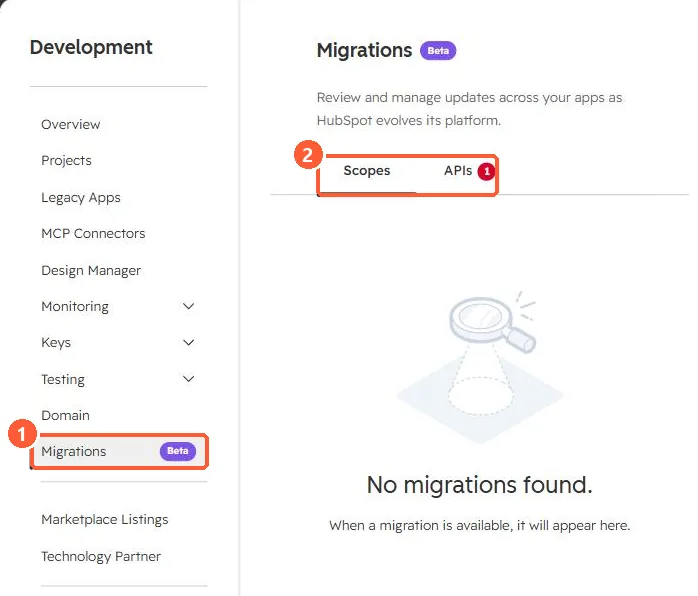
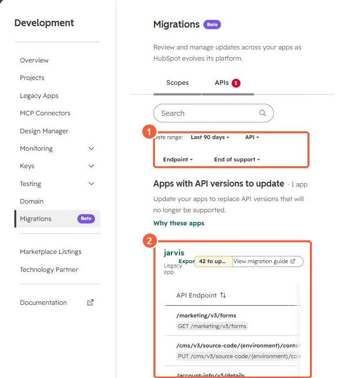

Short answer
Development > Migrations (beta) reviews updates across your apps as HubSpot changes its platform, with Scopes and APIs tabs. In my demo portal the APIs tab lists one legacy app with 42 endpoints to update, such as GET /marketing/v3/forms, with a link to a migration guide. HubSpot's docs describe moving apps to platform version 2026.09, which adds user-level access.
1. The page
In my demo portal, the Scopes tab has nothing pending.


2. The APIs tab
Filters cover date range, API, endpoint and end of support. Each app card lists endpoints to update.


3. Related
Legacy apps and hs project upload.